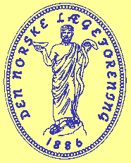

Adresse: Lagåsen, Fjellvn 5, 1324 LYSAKER
Sentralbord: 67 12 46 00
Telefax: 67 12 46 20
[Tilbake til Den norske lægeforening]
Sekretær: Cathrine C. Seem, Den norske lægeforening
Forprosjektgruppen har også knyttet til seg endel leger som fra før har tilgang til Internet. Denne uformelle evalueringsgruppen vil bidra med sine erfaringer i bruken av Legeforeningens Web-sider.
Forprosjektgruppen har utarbeidet en rapport til Landsstyret.